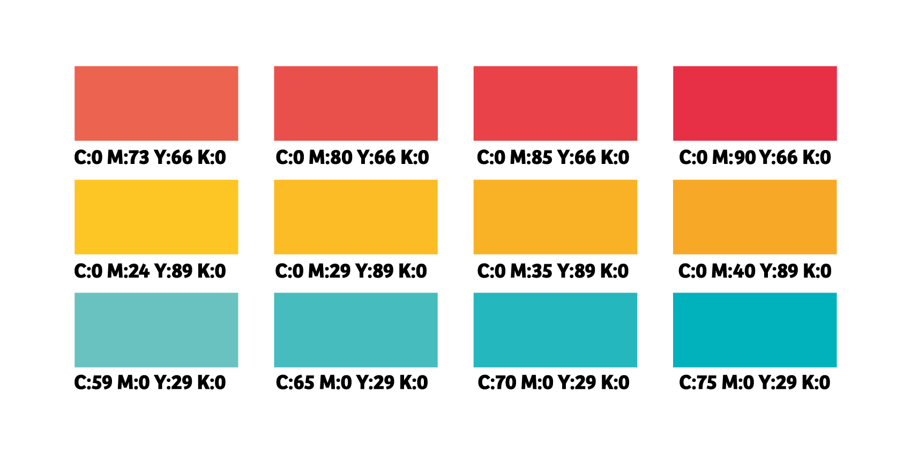

Er zijn om te beginnen 2 verschillende soorten kleurmodellen, het RGB en het CMY model. Maar hier ga ik later nog dieper op in, eerst wat houd een kleur model in? Een kleur wordt net zoals andere gegevens in je telefoon gecodeerd. Om met je telefooncamera deze kleuren te vangen komen ze eerst door een aantal lenzen waar een beeldcensor achter zit. Deze beeldcensor wordt ook wel een CCD genoemd en dit staat voor charge-coupled device. En deze censor, die uit miljoenen kleine cellen bestaat, zet het licht om in een elektrisch signaal en zo wordt er een momentopname gemaakt die wij kennen als een foto.
Een pixel is een klein vierkant puntje op je scherm. En het zorgt ervoor dat wij beeld kunnen zien, dit komt doordat elke pixel uit drie kleine lampjes bestaat die een willekeurige kleur aan kunnen nemen en ons zo een afbeelding te laten zien. Het woord pixel is ontstaan uit de woorden 'picture en element' En om de pixels de juiste kleur aan te kunnen laten nemen wordt er gebruik gemaakt van kleurmodellen.
Dit kleurmodel is gebaseerd op de kleuren Rood, Groen en Blauw, als je heel erg ver inzoomt op je scherm zie je uiteindelijk dat elke pixel ook uit deze kleuren bestaat. Het mengen van kleuren in het RGB-model gaat anders dan als je bijvoorbeeld verf mengt, zo wordt rood en groen samen geel. Dit komt omdat er bij het mengen rekening is gehouden met een zwarte achtergrond. Willen er nieuwe kleuren toegevoegd worden dan gaat dat aan de hand van getallen, en omdat een computer niet werkt op decimale getallen moeten het hele getallen zijn. De getallen die gebruikt worden om de kleur weer te geven zijn 3 decimale getallen van 0 tot en met 225.
Dit model wordt vooral gebruikt als je bijvoorbeeld iets moet printen. Dit is omdat het RGB systeem gebaseerd is op een zwarte achtergrond en dus niet werkt op wit printpapier. CMY staat voor Cyan, Magenta, Yellow Het enige probleem is, is dat dit model geen zwart kan maken, dit moet dan dus apart worde toegevoegd aan je printer. Dan krijg je het CMYK-model waarin de K staat voor zwart.
